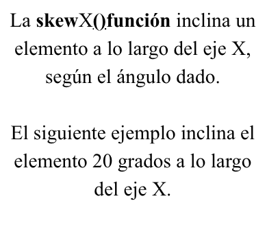

2D Transform
Traslate X() Function
Traslate Y() Function
Traslate (X, Y) Function
Rotate() Function
Rotate() Function
Rotate() Function
ScaleX() Function
ScaleY() Function
Scale() Function
SkewX() Function
SkewY() Function
Skew () Function
3D Transform
Traslate3d() Function
Rotate3d() Function
Scale3d() Function
Transition
Transition abreviada
Esta propiedad nos permite declarar todos los valores de la transición al mismo tiempo.
NOTA: Siempre especifique la propiedad transition-duration, de lo contrario la duración será 0s y la transición no tendrá efecto.
Valores de la Transition
transition-property
Indica las propiedades que cambian. Se puede usar all para aplicar la transición a todas.
transition-duration: 2s;
transition-property: all;
transition-duration: 2s;
transition-duration
Especifica cuántos segundos (s) tarda en completarse un efecto de transición.
transition-duration: 5s;
transition-timing-function
Controla la velocidad de la transición.
transition-delay
Establece el tiempo de espera antes de iniciar la animación.
transition-duration: 5s;
transition-delay: 2s;
Animation
Estas propiedades configuran la animación, los pasos se declaran por medio de la regla @keyframes.
animation-name, duration, timing-function, iteration-count.
@keyframes: transform: rotateY
animation-name, duration, animation-fill-mode.
@keyframes: top
animation-name, duration, animation-iteration-count, animation-direction.
@keyframes: % left/top
animation-name, duration, animation-fill-mode, animation-iteration-count.
@keyframes: transform: rotate
Resumen
üåÄ transform
➡ Qué cambio quieres hacer
üìç (posici√≥n, rotaci√≥n, tama√±o, inclinaci√≥n...)
⏳ transition
➡ Cómo quieres que ocurra ese cambio
üìç (duraci√≥n, suavidad, retraso...)
üé¨ animation
➡ Qué cambios quieres que ocurran automáticamente o en bucle
üìç (movimiento, secuencia, repetici√≥n...)
Accesibilidad
La animación parpadeante puede ser problemática para personas con problemas cognitivos, como el trastorno por déficit de atención e
hiperactividad (TDAH).
Además, ciertos tipos de movimiento pueden desencadenar trastornos vestibulares, epilepsia, migraña y sensibilidad escotópica.
La prefers-reduced-motion consulta de medios permite ofrecer una
experiencia con menos animaciones y transiciones a los usuarios que han configurado las preferencias de accesibilidad de su sistema operativo para
reducir el movimiento.
Fuentes consultadas
Gauchat, J. D. (2017). El gran libro de HTML5, CSS3 y JavaScript (3.ª ed.)
https://css-tricks.com/almanac/properties
https://developer.mozilla.org/en-US/docs/Web/CSS/Properties
https://www.w3schools.com/css
https://chat.openai.com